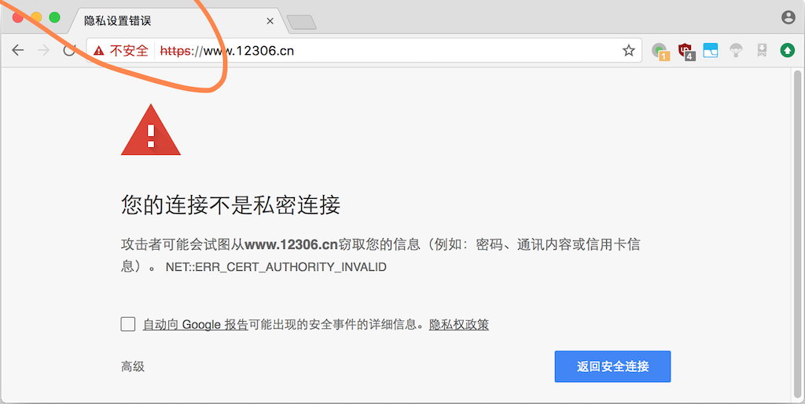
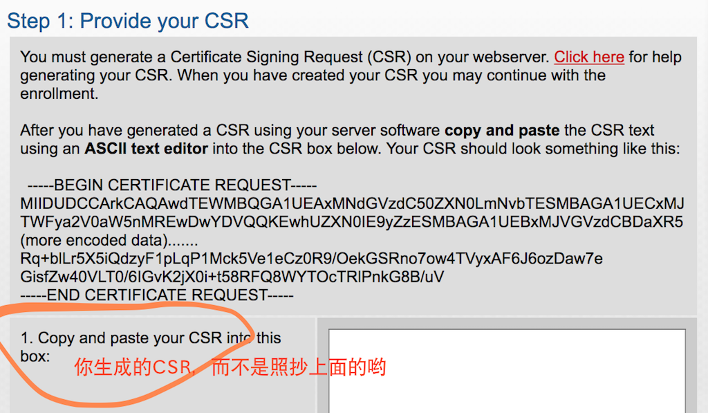
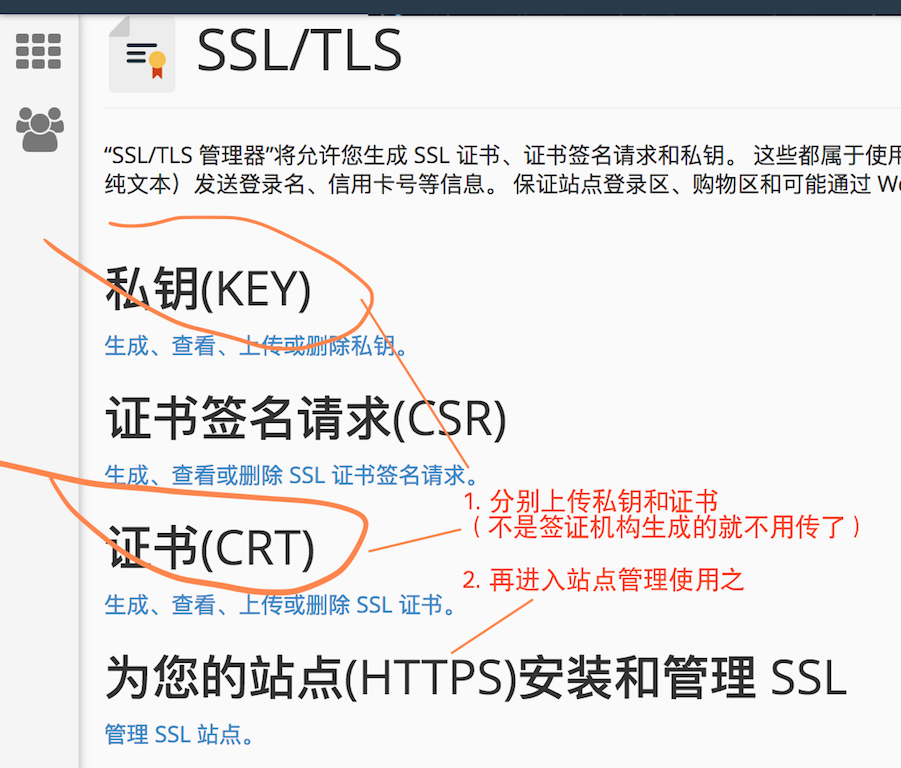
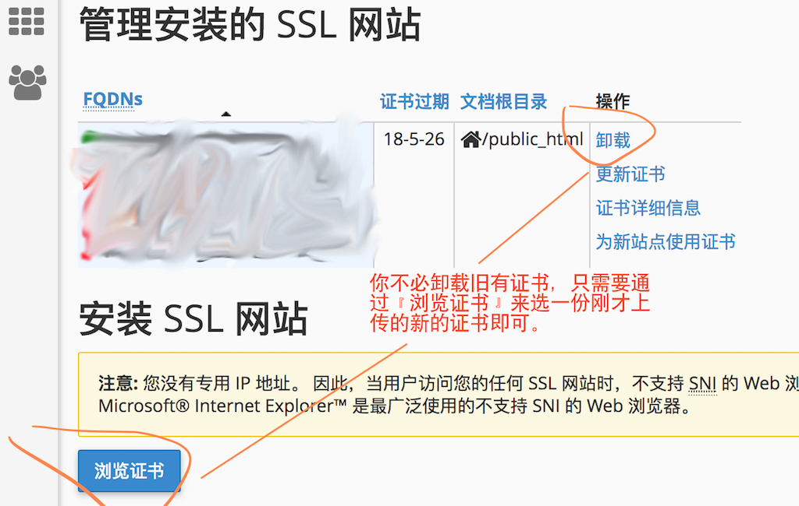

下面我们讲的内容其实与Gitment没什么关系。如果你已经有了支持https的空间那就跳过去，如果没有的话，建议还是看看好的伐。
10. 让免费主页空间支持HTTPS
好象我们把问题搞得复杂了：本来我是想做个静态主页的博客网站，现在我却需要找个支持PHP+SSL的动态主页空间？
好吧。没关系。反正我闲着在养病，不做点啥岂不是辜负了时光。
免费主页空间其实挺好找的，尽管要找到一个有长期信誉的并不太容易。即使如此，当你得到这样一个免费空间之后，它多数也是不支持https的。
10.1 你的主页空间是不是支持HTTPS？
好吧，确实有很多免费空间『声称』它支持https了。这种情况下它通常会给你用通用工具生成一个自主颁发的ssl凭证——而这个凭证是不受主流浏览器信任的。也就是说，在访问这样的一个网站时，你的浏览器地址栏会是这样：
（我很好奇为什么12306到现在仍然是这样，难道他们也得不到一个有效的ssl凭证吗？）

免费主页空间缺省情况下给你颁发的就是这样一种自主签名的SSL（能通过验证，却不被浏览器环境信任），又或者你的空间根本还不支持ssl/https。这个需要你到主页空间的后台去找一个名为SSL的管理功能，通常它会列举三个信息：
- Private Key，私钥，它通常与下面的CSR是成对的。
- CSR，证书验证请求（Cerificate Signing Request）。
- Certificate，验证信息。
简单的逻辑是：
- 假设你先有了一个私钥（Private Key），然后
- 你用私钥对一些『要验证的信息』加密，生成了一个验证请求（CSR），最后
- 你要找一个有公信力的机构来证明CSR是你的；如果验证通过他就给你发一份Certificate。
你最后从『公信力机构』拿到的这个Certificate就是SSL凭证。——找到你的免费空间后台管理中的Certificate填进去，OK，你的网站就支持https了。
当然这其中还有很多的细节，比如免费空间服务商怎么把你的Certificate装到Web服务器上面去等等等等。不过除非你是要搞台云主机自己来架服务器，这些就先不要了解了吧。
10.2 两种获得Certificate的方法
这三个信息有两种方式来获得。
- 一种是你的免费空间提供商为你生成Private Key/CSR这一对信息，然后你将其中的CSR提交给『公信力机构』，后者给你发Certificate文本。
所以这种情况下你看到免费空间后台管理的SSL配置中会有一个『Generate Key/CSR』按钮，按一下就得到了前面信息了——如果只能填入而不能Generate，那么你也可以自己做，例如在MacOSX中的工具keytool或OpenSSL（参考这里，或这里）。与之对应的，在『公信力机构』的证书申请流程中会有一个类似这样的提示：

- 另一种是『公信力机构』一次性地为你把上述三步全做了——他不需要你提供CSR，而是为你生成一个Private Key，然后自己生成CSR、完成验证并最后把Private Key交还给你。例如阿里云为你提供的验证服务就是这样（它后台用的是Symantec的免费DV服务）。这种情况下，你就需要将其中的Private Key交给免费空间提供商了——所以你的免费空间后台管理的SSL配置中，通常在『Generate Key/CSR』按钮旁边，就还会有一个『Upload Key』的功能，这个Key，指的就是Private Key。
好了。简单地汇总一下上面的信息：
- 找一个『公信力机构』，让他证明你的网站是你的；
- 如果他要CSR，你就给他；如果他不要CSR，那么他应该给你Private Key。
当然，如果你的主页空间不给你提供ssl功能（没有地方让你提交『公信力机构』验证过的Certificate），那么——换一家吧。
10.3 怎么证明『你的网站是你的』
所谓的『公信力机构』要颁发SSL签证，其实是想说明『因为这个网站你是你的，所以我发了这个证明给你』。因此无论如何，这个机构也要有办法来证明『你的网站是你的』，而不仅仅是因为你提交了CSR申请。
所以一旦你申请了，那么你就要为接下来的验证工作做准备，而这取决于不同的『公信力机构』采用的验证方法。下面举三种例子。
10.3.1 阿里云或Symantec的签证
阿里云可以为你的网站提供1年的免费SSL签证，它的这项服务是通过Symantec签证机构来做的（所以腾讯云也是这样）。所以下面其实是在说Symantec的签证要求。
阿里云是允许你通过修改DNS或在指定的主页位置放一个名为fileauth.txt的文本文件（一个详细的过程可以看过里，如果你能修改DNS的CNAME配置那么看这里）。这样，你就必须要：
- 有这个网站（或主页）的ftp账号；并且，
- 可以创建名为
.well-known这样以点字符开始的目录名（基于Windows系统的主机不能创建这样的名称）；并且， - 可以确保能通过
http://your-domain-name/.well-know/...这样的url路径下载到上述文本文件（注意：如果你的网站已经开通了https，那么它会优先访问https开头的地址）。
问题往往出在第3步。这是因为Symantec会优先去https开头的地址下载验证文件，而一般会提供ssl的主机/免费空间都会默认的给你装一个『自主签名的SSL证书』，这个证书事实上会被认为是无效的——因此Symantec就会验证不通过。
这种情况下你可以曲线救国：先去找别的机构签一个短期一些（通常是3个月）的证书，让这个https地址生效了，然后再回头过验证Symantec的签证（话说，我就是这么干的）。
不过，有些时候事情并不那么美妙，因为即使你的主页空间『信誓旦旦』地说他们开放了SSL，并且无论如何你都把文件传到了正确的地方，甚至你看起来也的确可以通过https/http来访问到上述的fileauth.txt文件的URL地址，但是——你就是通不过Symantec（或者阿里云、腾讯云等等）的验证——它们找不到上面的这个文件。
注意：我就是因为这个问题申请了又放弃了近二十个免费主页空间。相信我，如果你逐一去试，不会好到哪里去的。
问题出在哪儿呢？
这是因为非常非常多的『免费主页』本质上都是要在你的主页上挂广告才能活下去的，他们挂广告的方法真的很纷纷多啊。其中一种常用的，就是串改你的url地址，它会把浏览器访问到的url改成带广告代码的，然后自己搞点弹窗啊什么的，最后才重定向到你真实的地址。——这个过程浏览器认得，而『公信力机构』的验证程序可认不得啊，后者在读取验证文件的时候并不支持为浏览器准备的重定向！
所以，一旦你申请到一个主页空间，先用curl去访问一下，如果是下面这种返回：
> curl 'http://your-domain-name/'
<html>
<head><title>403 Forbidden</title></head>
...
好吧，它的意思是说不支持curl这样的直接访问，一般来说就不能用了。不过如果你不死心，可以再试试伪装成浏览器：
> curl -H 'User-Agent:Mozilla/5.0' 'http://your-domain-name/'
<html><body><script type="text/javascript" ...
那么你就真的不用想了：上面的就是挂广告的代码了，你还想什么呢。
所以你看，我申请了很多又很多个免费空间，都作废了。
10.3.2 试试别的验证方法，例如instantssl的
这家『公信力机构』也非常棒，他提供3个月免费的签证。我们上面说过，你可以尝试『曲线救国』，或者干脆就每三个月签一回，都行。
重要的是，instantssl采用的是邮件验证，而不是验证ftp文件。
instantssl是科摩多（comodo）提供的一项SSL证书发放服务，所以你用comodo.cn或instantssl.cn访问都是可以的。他要求你提供自己准备的CSR，之后会提示你会把证书邮寄给你的网站的admin邮箱账号。
所以，这就要求你的主页空间给你开通邮箱服务，并且你能自定义类似admin@yourname.freespace.xyz这样的邮箱名——这个instantssl可以让你选，不过总的来说就那几种特定的。
很好，如果你有这样的免费空间，或者你就是能得到这样的邮箱，那么试试instantssl的吧。我知道infinityfree免费空间提供这样的邮箱服务，比如我其实申请了一个.epizy.com的二级域名。但很不幸我没有通过instantssl的验证——它提示我相应名字的签证已经发过了。
不知道为什么。反正，你也许可以试试。
10.3.3 还有一些别的不错的签证机构
有个非常非常著名的、推动https的签证组织，叫Let’s Encrypt。这个签证非常好用，所以也常常有自己做虚拟主机的来用它（https://www.freehao123.com/lets-encrypt/），很多介绍中也首推就是它（例如这里）。
然而它对web域名签证并不友好，所以就有人搞了网站来做这件事，最好用的就是这家了：https://www.sslforfree.com/，它发的也是3个月的免费签证。你可以先看看这个教学SSLforFree 免费SSL凭证。
SSLforFree的验证过程与阿里云/Symantec的类似，也是要求你传一个文件到ftp上（或者改DNS CNAME），不过他不验证https，所以多数『提供了无效的https的免费空间』来说也能很好的通过验证——除了我上面说的挂广告代码的那种情况。
也许还有其它好的，有知道的不妨推荐给我。
10.4 安装你得到的凭证
『公信力机构』最终给你的是名为Certificate的凭证。并且，
- 如果是他帮你生成的CSR，那么他会给你Private Key；
- 一般来说他会给你一个它作为签证机构的公钥，不过由于使用者（例如你的主页空间服务商）能直接从网站上搜到这个公钥，所以没有给你也是正常的。
你需要在后台把Certificate凭证和Private Key给上传(Upload)或更新(Update)到你的管理后台——如果它有类似『SSL管理』这样的功能的话。例如：
（第1步先上传你的证书）

（然后点下面的『管理SSL站点』）
